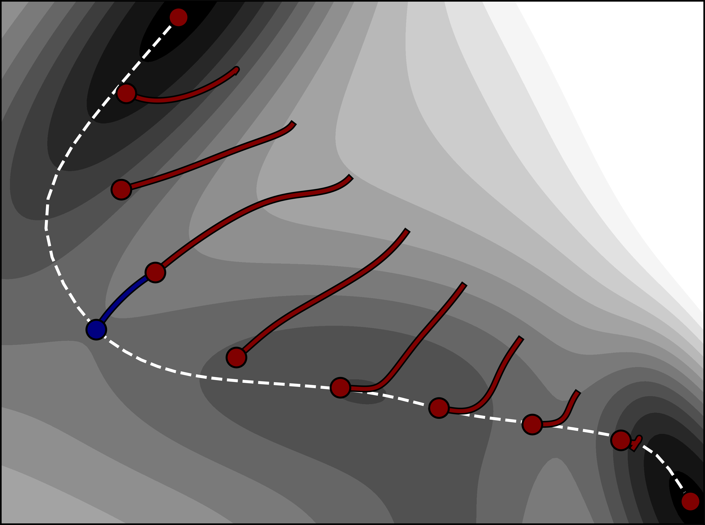

微动弹性带方法（Nudged Elastic Band Method）¶
理论（Theory）¶
微动弹性带（Nudged Elastic Band，NEB）Mills1995,Jonsson1998,Henkelman2000a 方法用于寻找连接势能面（PES）上两个局域能量极小值的最小能量路径（minimum energy path，MEP），从而给出该转变活化能的估计。在下面的讨论中，这两个极小值点分别称为反应物和产物。路径可以有一个或多个极大值，每个对应能量面上的一个一阶鞍点。NEB 方法相对本征矢量跟踪方法的一个优点是，它保证能找到连接给定反应物态和产物态的鞍点。最小能量路径常用于表示两态之间转变的反应坐标。下面概述的方法和实现详见参考文献 Asgeirsson2021。
用户需要指定反应物和产物构型。反应物能量极小值插入常规 ORCA 输入文件中，而产物应在单独的 .xyz 文件中（关键词：neb_end_xyzfile）。反应物和产物构型应通过弛豫到 PES 上的能量极小值先验地优化，见 optimization.geometry 一节。这也可以通过 'preopt_ends' 关键词实现。重要的是仔细准备反应物和产物，使原子的位置（或编号）在两个构型文件中相同，即反应物和产物构型之间应有一一映射。
两个极小值之间的离散化路径由一组 \(M\) 个称为映像（image）的体系构型表示，即 \(R = [r_0, r_1, ..., r_{M-1}]\)。端点（即反应物和产物）之间的中间映像数由用户指定。一般的经验法则是包含 \(M=7-12\) 个，或每个能量极大值 5–10 个中间映像，以获得足够高的路径和鞍点分辨率。不过，用更少的映像计算往往也能收敛并给出准确结果，但具有多个极大值或长尾的复杂路径可能需要更多映像。在 NEB 计算期间，中间映像利用垂直于当前路径的原子力分量（由每个映像处路径的切线估计）迭代地向 MEP 移动，而端点映像通常保持固定。在迭代过程的每一步中，需要计算每个中间映像的能量和原子力。NEB 方法的主要优点之一是映像的计算可以并行进行，电子结构计算可以分布到多个处理器上（关于并行化的更多细节见下文的讨论）。虽然 CPU 时间与映像数成正比，但收敛到 MEP 所需的迭代次数在路径的离散表示中包含更多映像时可能变小。
每个映像处路径的切线 \(\hat{\tau}_i\) 可以用两种方式估计（关键词：tangent），或者用原始方法 Jonsson1998，或者用数值上更稳定的改进估计 Henkelman2000a（默认选项）。在前者中，一个映像处的切线取为连接到映像 \(i\) 的两条线段的线性组合，
在改进的切线估计中，使用从当前映像到能量更高的相邻映像的线段，即
其中 \(\tau^+ = r_{i+1}-r_i\)，\(\tau^- = r_{i}-r_{i-1}\)。除了映像 \(i\) 处于路径上的能量极值的情况外，则使用到相邻映像的两条线段的能量加权平均，
其中
然后切线归一化，\(\hat{\tau}_i = \tau_i/|\tau_i|\)。有了切线的准确估计，原子力的垂直分量按下式计算：
在自由端 NEB 方法中，端点映像与中间映像一起优化，即使用 \(M\) 个可移动的映像。ORCA 中包含自由端 NEB 方法的三个不同变体（关键词：free_end、free_end_type）：(i) 端点被约束沿相同（或不同）的能量等值线移动 Zhu2007,Asgeirsson2018，(ii) 根据作用于垂直路径方向的原子力移动，(iii) 全部原子力。对第一种变体，"反应物"和"产物"端点映像可以被约束沿两条不同的能量等值线 \(E_0\)（由关键词 free_end_ec 给出）和 \(E_1\)（由关键词 free_end_ec_end 给出）移动，以保持路径有界。然后，若因能量面的曲率映像偏离等值线，则用一个谐约束项把映像拉回等值线。Asgeirsson2018 谐约束的刚度由用户提供的参数给出（关键词：free_end_kappa）。重要的是仔细选择能量和谐约束的强度，否则路径可能变得扭结。对第二种变体，端点映像无约束但直接向 MEP 位移。如果端点映像已经靠近 MEP，这通常是可接受的，且不易在路径上产生扭结。对第三种变体，端点映像被优化到反应物和产物的能量极小值。
弹簧力（Spring Forces）¶
为控制映像沿路径的分布，包含作用于相邻映像之间、与路径相切的弹簧力 Jonsson1998，
弹簧力的大小（即刚度）由弹簧常数 \(k^\text{sp}\) 控制。弹簧常数的典型值（关键词：springconst）可取在 0.01 Eh/Bohr\(^2\) 到 1.0 Eh/Bohr\(^2\) 范围内。如果所有相邻映像对的弹簧常数相同，映像将沿路径均匀分布。不过，也可以选择能量加权的弹簧常数（关键词：energy_weighted），以便在更高能量区域增加映像的密度 Henkelman2000b,Asgeirsson2021。在能量加权的 NEB 计算中，弹簧常数根据映像的相对能量从下界值（关键词：springconst）缩放到上界值（关键词：springconst2），按下式
其中 \(k_{\text{u} }\) 和 \(k_{\text{l} }\) 是弹簧常数的上界和下界值。\(E_\text{max}\) 是沿路径最大能量的当前估计，\(E_i\) 是由线段 \(i\) 连接的映像对中能量更高的映像，\(E_\text{ref}\) 是能量更高的极小值的能量。能量加权的弹簧通常有助于改善势垒区域的切线估计，从而使计算稳定。包含能量加权弹簧在能垒狭窄和/或路径以长"能量尾"为特征的反应中可能很重要，例如在重排或解离反应中。弹簧常数的选择会影响计算的行为，特别是达到收敛所需的迭代次数。自 ORCA 4.2 起也可用其他弹簧力的表述（关键词：springtype）。它们被称为原始 Jonsson1998 和理想 Maras2016 弹簧力。原始弹簧力由作用于相邻映像对之间每个自由度上的弹簧估计。对理想弹簧，每个映像根据映像当前位置的线性插值在路径上分配一个理想位置，各个映像通过弹簧力与理想位置相互作用。理想弹簧目前未实现与能量加权弹簧常数一起工作。 虽然 NEB 计算（默认）只包含与路径平行的弹簧力分量，用户可以选择包含一部分作用于垂直路径方向的弹簧力以稳定计算（关键词：perpspring）。因为弹簧力的垂直分量有助于拉直路径，对具有多个能量极值和路径分辨率低的复杂路径很有用。弹簧力垂直分量的包含总是伴随一个切换函数，用于根据 (i) 向 MEP 的收敛（'tan' 函数）Sheppard08、(ii) 相邻映像之间的夹角（'cos' 函数）Jonsson1998 或两者的组合来缩放它。弹簧力垂直分量的包含有助于减少迭代次数并消除路径上的扭结。但必须强调的是，通过包含垂直弹簧力，映像可能不收敛到 MEP 上。或者，用户可以选择使用改进的 DNEB 方法 DNEB2005,Sheppard08。
NEB 方法的优化与收敛（Optimization and Convergence of the NEB Method）¶
标准 NEB 计算中使用的有效力是垂直于路径的原子力分量与平行于路径的弹簧力分量之和，
可以通过按有效力移动将路径带到 MEP，如 fig:neb-forces 所示。
 NEB 优化中沿中间路径三个映像的有效力 \(F^\text{NEB}\) 及其两个分量：\(F^\perp_i\) 和 \(F^{\text{sp},\parallel}_i\) 的可视化。该图取自参考文献 Asgeirsson2021b
这可以通过使用所实现的三种优化方法中的任何一种来实现（关键词：opt_method）：速度投影优化（VPO）Jonsson1998、快速惯性弛豫引擎（FIRE）Bitzek2006 和 L-BFGSLBFGS。VPO 和 FIRE 对远离 MEP 的区域更稳健，而当映像靠近 MEP 时 L-BFGS 收敛更快。FIRE 和 VPO 都有局域和全局实现（关键词：local）。在局域变体中，采取优化步时所有映像被单独处理，而在后者中整个弹性带被当作一个点处理。所有优化方法都使用恒定的"信赖半径（trust-radius）"，即若优化步的最大笛卡尔分量超过用户给定的阈值（关键词：maxmove），整个位移会相应缩小。L-BFGS 优化中为构造近似 Hessian 矩阵所存储的步数可由用户调整（关键词：lbfgs_memory）。为进行更保守的 L-BFGS 优化，若尝试大步也可以清除记忆（关键词：lbfgs_restart_on_maxmove）。
中间映像的收敛由垂直于路径的原子力的最大笛卡尔分量以及均方根判断，即
\(\max(|F^\perp|), \text{RMS}(F^\perp)\)。当映像位于 MEP 上时，映像上垂直于路径的原子力消失。垂直于路径的原子力最大分量的典型容差值为 \(1\cdot10^{-3}\) Eh/Bohr。通常均方根值的容差取小 1/2 或 1/3 倍。有时需要对力的最大分量取更紧的容差，例如 \(5\cdot 10^{-4}\) Eh/Bohr 甚至 \(2 \cdot 10^{-4}\) Eh/Bohr。允许的最大优化步数由关键词 'maxiter' 设置。
每次迭代后每个映像的构型写入一个 '_trj.xyz' 文件（见文件：basename_MEP\(\_\)ALL_trj.xyz）。该文件对排查不收敛的计算很有用。
NEB 优化中沿中间路径三个映像的有效力 \(F^\text{NEB}\) 及其两个分量：\(F^\perp_i\) 和 \(F^{\text{sp},\parallel}_i\) 的可视化。该图取自参考文献 Asgeirsson2021b
这可以通过使用所实现的三种优化方法中的任何一种来实现（关键词：opt_method）：速度投影优化（VPO）Jonsson1998、快速惯性弛豫引擎（FIRE）Bitzek2006 和 L-BFGSLBFGS。VPO 和 FIRE 对远离 MEP 的区域更稳健，而当映像靠近 MEP 时 L-BFGS 收敛更快。FIRE 和 VPO 都有局域和全局实现（关键词：local）。在局域变体中，采取优化步时所有映像被单独处理，而在后者中整个弹性带被当作一个点处理。所有优化方法都使用恒定的"信赖半径（trust-radius）"，即若优化步的最大笛卡尔分量超过用户给定的阈值（关键词：maxmove），整个位移会相应缩小。L-BFGS 优化中为构造近似 Hessian 矩阵所存储的步数可由用户调整（关键词：lbfgs_memory）。为进行更保守的 L-BFGS 优化，若尝试大步也可以清除记忆（关键词：lbfgs_restart_on_maxmove）。
中间映像的收敛由垂直于路径的原子力的最大笛卡尔分量以及均方根判断，即
\(\max(|F^\perp|), \text{RMS}(F^\perp)\)。当映像位于 MEP 上时，映像上垂直于路径的原子力消失。垂直于路径的原子力最大分量的典型容差值为 \(1\cdot10^{-3}\) Eh/Bohr。通常均方根值的容差取小 1/2 或 1/3 倍。有时需要对力的最大分量取更紧的容差，例如 \(5\cdot 10^{-4}\) Eh/Bohr 甚至 \(2 \cdot 10^{-4}\) Eh/Bohr。允许的最大优化步数由关键词 'maxiter' 设置。
每次迭代后每个映像的构型写入一个 '_trj.xyz' 文件（见文件：basename_MEP\(\_\)ALL_trj.xyz）。该文件对排查不收敛的计算很有用。
爬坡映像 NEB（Climbing Image NEB，CI-NEB）¶
为使最高能量映像更准确地收敛到 MEP 上的（最高）能量极大值，可使用 NEB 方法的爬坡映像变体（CI-NEB）。Henkelman2000b 在 CI-NEB 方法中，作用于爬坡映像（即 \(i=\text{ci}\)）的有效力 \(F^\text{NEB}\) 变换为：
其中爬坡映像沿路径被推向上坡，而垂直于路径弛豫到下坡。也就是说，能量相对对应于切线方向的一个自由度被最大化，而相对所有其他自由度被最小化。爬坡映像上的有效力不包含任何弹簧力，映像的密度在爬坡映像两侧于是变得不同。只要切线估计足够准确，爬坡映像将严格收敛到路径上的最高能量点。爬坡映像 NEB 方法工作原理的说明见 fig:cineb-mb，是一个简单的二维能量函数。
 CI-NEB 方法在二维 Müller-Brown 能量面 \(E(x,y)\) 上工作原理的说明。Muller1979 计算从反应物（R）和产物（P）能量极小值之间的线性插值出发，使用 \(M=10\)。
映像沿正交于路径的方向（红色曲线）位移，直到收敛到最小能量路径（白色虚线曲线）。爬坡映像准确定位了路径上更高能量的一阶鞍点（记作
SP）。优化剖面显示为插图。在这样的图中，沿路径的插值能量作为位移的函数绘制，对每个（或选定的）优化步。
该图取自参考文献 Asgeirsson2021b
在垂直于路径的原子力量值降到给定的用户阈值以下之后再启动爬坡映像可能有用（关键词：tol\(\_\)turn\(\_\)on\(\_\)ci）。然后，当前路径上最高能量的映像被转换为爬坡映像。通常最高效的是在 NEB 计算早期甚至一开始就启动爬坡映像。这适用于使用 VPO 优化方法时。对 L-BFGS，建议在路径部分收敛到 MEP 后再开始 CI-NEB，例如在 0.01-0.02 Eh/Bohr 左右。如果 MEP 上的能量有两个或多个极大值，在 NEB 计算早期阶段，靠近最高极大值的映像可能未被选为爬坡映像。那么之后爬坡映像的选择可以自动切换。同样，对于无势垒反应，爬坡映像不会被开启。当计算成功完成时，爬坡映像（在 CI-NEB 计算中）或最高能量映像（在 NEB 计算中）的原子坐标分别写入文件 '_NEB-CI\(\_\)converged.xyz' 和 '_NEB-HEI\(\_\)converged.xyz'。
CI-NEB 计算的收敛可以通过监控所有映像上的力或仅爬坡映像上的力来判断（关键词：convtype）。当计算的目标是定位连接反应物态和产物态的最高能量鞍点时，后一选项可以节省大量计算量。为判断爬坡映像上的收敛，同时监控原子力的最大（笛卡尔）分量的均方根和量值，即
\(\max(|F_\text{ci}|), \text{RMS}(F_\text{ci})\)。当判断 CI-NEB 计算中所有映像的收敛时，通常可以接受让常规映像比爬坡映像更宽松地收敛。默认情况下，常规映像的容差比爬坡映像大 10 倍。该容差标度是一个可由用户设置的参数（关键词：tol_scale）。通常对于可接受的鞍点收敛，爬坡映像原子力分量最大量值的容差阈值可设为 \(5\cdot 10^{-4}\) Eh/Bohr。
CI-NEB 方法在二维 Müller-Brown 能量面 \(E(x,y)\) 上工作原理的说明。Muller1979 计算从反应物（R）和产物（P）能量极小值之间的线性插值出发，使用 \(M=10\)。
映像沿正交于路径的方向（红色曲线）位移，直到收敛到最小能量路径（白色虚线曲线）。爬坡映像准确定位了路径上更高能量的一阶鞍点（记作
SP）。优化剖面显示为插图。在这样的图中，沿路径的插值能量作为位移的函数绘制，对每个（或选定的）优化步。
该图取自参考文献 Asgeirsson2021b
在垂直于路径的原子力量值降到给定的用户阈值以下之后再启动爬坡映像可能有用（关键词：tol\(\_\)turn\(\_\)on\(\_\)ci）。然后，当前路径上最高能量的映像被转换为爬坡映像。通常最高效的是在 NEB 计算早期甚至一开始就启动爬坡映像。这适用于使用 VPO 优化方法时。对 L-BFGS，建议在路径部分收敛到 MEP 后再开始 CI-NEB，例如在 0.01-0.02 Eh/Bohr 左右。如果 MEP 上的能量有两个或多个极大值，在 NEB 计算早期阶段，靠近最高极大值的映像可能未被选为爬坡映像。那么之后爬坡映像的选择可以自动切换。同样，对于无势垒反应，爬坡映像不会被开启。当计算成功完成时，爬坡映像（在 CI-NEB 计算中）或最高能量映像（在 NEB 计算中）的原子坐标分别写入文件 '_NEB-CI\(\_\)converged.xyz' 和 '_NEB-HEI\(\_\)converged.xyz'。
CI-NEB 计算的收敛可以通过监控所有映像上的力或仅爬坡映像上的力来判断（关键词：convtype）。当计算的目标是定位连接反应物态和产物态的最高能量鞍点时，后一选项可以节省大量计算量。为判断爬坡映像上的收敛，同时监控原子力的最大（笛卡尔）分量的均方根和量值，即
\(\max(|F_\text{ci}|), \text{RMS}(F_\text{ci})\)。当判断 CI-NEB 计算中所有映像的收敛时，通常可以接受让常规映像比爬坡映像更宽松地收敛。默认情况下，常规映像的容差比爬坡映像大 10 倍。该容差标度是一个可由用户设置的参数（关键词：tol_scale）。通常对于可接受的鞍点收敛，爬坡映像原子力分量最大量值的容差阈值可设为 \(5\cdot 10^{-4}\) Eh/Bohr。
初始路径的生成（Generation of the Initial Path）¶
任何 NEB 或 CI-NEB 计算最重要的方面之一是反应物和产物能量极小值之间初始路径的生成（关键词：interpolation）。推荐的方法是映像相关对势（image-dependent pair potential，IDPP）方法 IDPP2014。另一种更简单的方法是笛卡尔坐标中的线性插值。无论哪种情况，用户都应始终检查初始路径（见文件：basename\(\_\)initial\(\_\)path_trj.xyz），确保它是可接受的。 默认情况下，会扫描端点结构中通过共价键连接的片段。若在任一端点结构中检测到两个片段，会自动准备结构使片段之间的距离不超过默认为 3.5 Å 的最大距离。 笛卡尔坐标中的线性插值可能导致原子重叠，从而产生很大的初始原子力，甚至导致 SCF 循环发散。IDPP 方法通过对反应物和产物能量极小值中相邻原子之间的成对距离进行插值来解决这些问题。然后生成一条路径以尽可能匹配那些距离。由于成对距离远多于原子坐标，初始路径通过最小化目标函数得到，
其中 \(d_{AB}\) 是中间映像 \(i\) 中原子 \(A\) 和 \(B\) 之间的成对距离。\(d^\kappa_{AB}\) 是同一映像中原子 \(A\) 和 \(B\) 之间的理想插值距离。\(w\) 是一个权重函数，给较短的键距离更大权重，使不必要的断键不利。权重函数给为 \(w = (d_{\text{AB} })^{-4}\)。IDPP 路径避免原子重叠，也能生成比笛卡尔坐标线性插值更靠近 MEP 的路径 IDPP2014。IDPP 路径由使用 IDPP 目标函数的 NEB 计算得到，从端点结构之间笛卡尔坐标的线性插值出发，但该计算几乎不需要计算量，因为它不需要任何电子结构计算。注意初始路径可能打断共价键，也可能远离最优 MEP。若是这种情况，默认算法会检测到并自动生成不同的 IDPP 初始路径。这会重复进行，直到要么得到没有不必要键变化的初始路径，要么所有初始路径选项都用尽，此时识别出最佳初始路径。无论如何，用户在开始 NEB 计算前应始终检查初始路径。用户可以使用 'idpp' 相关关键词调整 IDPP 计算的设置，但默认值对大多数应用应足够。注意 IDPP 的单位是 Å 而非原子单位。 映像 \(i\) 中原子 \(A\) 和 \(B\) 之间理想插值距离的矩阵 \(d_{AB,\ i}^\kappa\,\) 最简单地由线性插值得到
其中 \(P_{i} = \frac{i}{n_{im} - 1}\) 是映像 \(i\) 在路径上的位置，介于 0（对应初始映像）和 1（对应最终映像）之间，\(n_{im}\) 是映像的总数。
由于这种线性距离插值可能并不理想，也可以选择考虑原子键的双线性距离插值方案。初始和最终映像中原子 \(A\) 和 \(B\) 之间的键在其距离 \(d_{AB} < t_{bond} = t_{c}\left(R_{A}^{cov} + R_{B}^{cov}\right)\,,\) 时被识别，其中 \(t_{c}\) 是影响检测键距离的输入因子，默认取 1.3，\(R_{X}^{cov}\) 是原子 \(X\) 的共价半径。若在一个端点结构中检测到键而在另一个中没有，则执行两次线性距离插值得到 \(d_{AB, i}^{\kappa}\)。第一次插值原子成键的端点结构与 \(t_{bond}\) 之间的距离，第二次插值 \(t_{bond}\) 与键断裂的端点结构之间的距离。两次线性距离插值在路径位置 \(P_{join}\)（默认为 0.5，对应端点映像之间路径的中点）处连接。若原子在初始结构中成键而在最终结构中不成键，插值为
若原子在最终结构中成键而在初始结构中不成键，插值为
这种双线性插值在大多数情况下导致成键区域的原子距离比非成键区域增加更慢，强调断键过程，从而强调键距离变化使能量改变最大的区域。若非成键区域键距离的变化比成键区域慢，实现会回退到常规的线性距离插值。
在有挑战性的情况下，即使是从未端点结构之间笛卡尔坐标线性插值出发的 IDPP NEB 计算也可能无法提供合理的初始路径。当线性插值路径在中间映像中使原子非常接近时就会发生这种情况，即使在使用 IDPP 目标函数的 NEB 优化后也会导致断键。在这种情况下，通过避免线性插值、改为从两个端点结构出发依次向路径添加映像，通常可以得到合理的初始路径。该方法称为顺序 IDPP（S-IDPP）。Schmerwitz2024a 靠近每个端点结构的两组映像之间，通过选择比每组内映像之间更小的弹簧常数（组内使用相等的弹簧常数）而相隔更大的距离。最靠近中心的映像在 NEB 计算中收敛，并在两个最靠近中心的映像之间、距收敛映像适当距离处添加一个映像。该过程重复进行，直到添加了所需数量的映像。最靠近中心的映像的切线遵循改进的切线定义，并总是把它们当作路径上的极值，即使用到相邻映像的归一化距离矢量的平均。用于形成 S-IDPP 初始路径的映像数可以与后续含电子结构计算的 NEB 计算中所用的映像数不同。在 S-IDPP 计算中使用偶数个映像可能是有益的，因为这样初始路径中心就不放置映像，之后在附加的 IDPP NEB 计算中再移动到所需的奇数个映像。该选项默认使用，但可以停用。对于涉及大基团很重转动的体系，在 S-IDPP 计算中使用两倍数量的映像时方法更稳健。随后含电子结构计算的 NEB 计算会自动移去一半的映像。该选项可用，但默认不使用。
用所选设置生成的初始路径会检查不必要的断键或成键。原子 \(A\) 和 \(B\) 之间的键在其距离 \(d_{AB} < t_{bond} = t_{c}\left(R_{A}^{cov} + R_{B}^{cov}\right)\,,\) 时被识别，其中 \(t_{c}\) 是影响检测键距离的输入因子，默认取 1.3，\(R_{X}^{cov}\) 是原子 \(X\) 的共价半径。若原子 \(A\) 和 \(B\) 的连接性在端点结构之间不变，则其连接性的变化被认为是不必要的。若连接性在端点结构之间确实改变，则允许连接性恰好改变一次，但沿初始路径的任何进一步连接性变化被认为是不必要的。若初始路径上出现任何不必要的连接性变化，则利用 S-IDPP 的灵活性系统地生成不同设置的更多初始路径，直到得到一个没有不必要连接性变化的初始路径。该超参数搜索的参数空间由 SIDPP_Reparam、SIDPP_Energy_Weighted_Tangent、SIDPP_Even_NIm、SIDPP_Double_NIm、SIDPP_Ideal_Springconst 的所有组合以及 SIDPP_Tol_MaxF 的四个值（0.05、0.01、0.005 和 0.001）组成，除了所选设置外总共有 128 个选项。一旦找到没有不必要连接性变化的初始路径，超参数搜索即终止。在不太可能的情形下，所有生成的初始路径都显示不必要的连接性变化时，默认取最少的那个，但用户可能更愿意让计算中止以检查初始路径，这可用关键词 SIDPP_HyperSearch_StrictConnectivity 设置。
Note
在某些情况下，例如分子中大位阻基团的转动，反应可能只能通过沿 MEP 断裂并重新形成一个键来进行。你可能并不总是想要完全无不必要连接性变化的初始路径！
用户可能对鞍点构型有预想，或从较低理论水平的计算中得到路径的估计。初始路径可以以包含一个中间构型作为其中一个映像的方式生成，使用 'NEB_TS_XYZFile' 关键词。由于该映像将与其他中间映像一起在 NEB 计算期间优化，猜测不必准确。
如果检查初始路径发现问题，例如不必要的断键，向初始插值中插入一个合理的构型以避免此类问题通常是好主意。此外，如果 NEB 计算在给定的最大迭代数内无法收敛到 MEP（或鞍点），用户可以从 'allxyz' 文件（见文件：basename_MEP.allxyz）重新开始计算，该文件在优化期间每次迭代后写入磁盘。注意，从先前 CI-NEB 计算的输出开始 NEB 计算以及反之亦然时，弹性带可能需要几次迭代来调整映像分布以达到所需的分布，取决于所选的弹簧类型和 NEB 方法的选择。
如果体系可以用 GFN-xTB 方法合理地建模，另一种可能的选择是在 XTB 水平上生成初始路径（关键词 'XTB0'、'XTB1' 或 'XTB2' 分别对应 GFN0-xTBpracht2019xtb、GFN-xTBgrimme2017xtb 或 GFN2-xTBgrimme2019xtb）。在这种情况下，IDPP 水平上的初始路径用所选 XTB 水平上的 NEB 计算精修。如果该 NEB 运行成功，XTB 水平上的整个 MEP 用作初始路径。如果 XTB 水平上的 NEB 运行不成功，则改用 IDPP 水平上的初始路径。
另一个使用 XTB 方法的关键词是 'XTBTS' 关键词（'XTB0TS'、'XTB1TS' 或 'XTB2TS'）。在这种情况下，IDPP 水平上的初始路径用 XTB 水平上的 NEB-CI 计算精修。如果 NEB-CI 运行成功，所得 CI 结构被选作 TS 猜测结构，最终的初始路径用从反应物到 TS 猜测以及从 TS 猜测到产物的 IDPP 路径生成。如果 XTB 水平上的 NEB-CI 运行不成功，则改用 IDPP 水平上的初始路径。
平动和转动自由度的移除（Removal of Translational and Rotational Degrees of Freedom）¶
对分子体系的 NEB 和 CI-NEB 计算，投影掉对应于体系整体转动和平动的六个（线性分子则为五个）自由度是很重要的。这可以在计算开始时或对每个优化步进行（关键词：quatern）。对后者，每个映像的几何中心被平移到原点，并用四元数方法 marko2016 构造一个旋转矩阵，以最小化任意两个相邻映像之间的均方根偏差。取决于是否使用固定中心（关键词：fix_center），映像要么保持在该处，要么被转移回其原始位置。该过程对优化每一步中的任意相邻映像对重复进行。此外，净有效 NEB 力被设为零（关键词：remove_extern_force）。removetranslation1998
使用微动弹性带方法的优化（Optimizations using the Nudged Elastic Band Method）¶
总结一下——微动弹性带（NEB）方法用于寻找连接给定反应物态和产物态极小值的最小能量路径（MEP）。生成一条初始路径，并由原子构型的离散集合表示，称为体系的映像。映像数由用户指定，必须足够大以获得路径足够的分辨率。ORCA 中的实现在 Ásgeirsson 等人的文章 Asgeirsson2021 以及 structurereactivity.neb 一节中连同输入选项一起详细描述。NEB 方法最常见的用途是寻找指定给定初态和终态过渡态的势能面上最高能量鞍点。一阶鞍点的严格收敛可通过爬坡映像 NEB（CI-NEB）获得，其中最高能量映像沿路径切线方向被推向能量上坡，同时在正交方向弛豫到下坡。寻找一阶鞍点的另一种方法是 NEB-TS，它先用宽松容差的 CI-NEB 方法，然后切换到 OptTS 方法以在鞍点上收敛。这种组合对复杂反应的计算可能是好的选择，其中 ScanTS 方法失败，或需要二维弛豫势能面扫描来为 OptTS 方法找到一个好的初始猜测结构。zoomNEB 变体对具有长尾的非常复杂的过渡态是好的选择。关于 ORCA 中实现的各种 NEB 变体的更详细信息，请查阅 structurereactivity.neb 一节。
在其最简单的形式中，NEB、NEB-CI 和 NEB-TS 只需要反应物和产物态构型（一个通过 xyz 块，另一个通过关键词 neb_end_xyzfile）：
!NEB-TS # or !NEB or !NEB-CI or !ZOOM-NEB-TS or !ZOOM-NEB-CI
# or !Fast-NEB-TS (corresponds to IDPP-TS defined
# in the NEB-TS manuscript)
# or !Loose-NEB-TS (corresponds to default NEB-TS
# in the NEB-TS manuscript)
%neb
neb_end_xyzfile "final.xyz"
end
下面是涉及乙酸分子内质子转移的 NEB-TS 运行示例。最简单的输入是
8 structure (0 1) C 0.416168 0.038758 -0.014077 C 0.041816 0.011798 1.439610 O 1.524458 0.176600 -0.453888 O -0.654209 -0.127881 -0.803857 H -0.391037 -0.126036 -1.737478 H -0.913438 0.507022 1.585301 H -0.057787 -1.026455 1.750845 H 0.819515 0.485425 2.030252
!XTB NEB-TS %neb neb_end_xyzfile "final.xyz" end *xyz 0 1 C 0.416168 0.038758 -0.014077 C 0.041816 0.011798 1.439610 O 1.524458 0.176600 -0.453888 O -0.654209 -0.127881 -0.803857 H -0.391037 -0.126036 -1.737478 H -0.913438 0.507022 1.585301 H -0.057787 -1.026455 1.750845 H 0.819515 0.485425 2.030252 *
其中 final.xyz 结构包含质子在另一个氧上的相应结构。
初始路径是合理的，CI 计算可以在五次 NEB 迭代后开启。
Starting iterations:
Optim. Iteration HEI E(HEI)-E(0) max(|Fp|) RMS(Fp) dS
Switch-on CI threshold 0.020000
LBFGS 0 4 0.081017 0.073897 0.018915 3.2882
LBFGS 1 5 0.070244 0.056668 0.013913 3.2770
LBFGS 2 5 0.062934 0.038972 0.008763 3.3376
LBFGS 3 5 0.057358 0.032076 0.006535 3.3950
LBFGS 4 4 0.053260 0.019015 0.003599 3.4826
Image 4 will be converted to a climbing image in the next iteration (max(|Fp|)<0.0200)
Optim. Iteration CI E(CI)-E(0) max(|Fp|) RMS(Fp) dS max(|FCI|) RMS(FCI)
Convergence thresholds 0.020000 0.010000 0.002000 0.001000
CI 运行在另外几次迭代后收敛：
*********************H U R R A Y*********************
*** THE NEB OPTIMIZATION HAS CONVERGED ***
*****************************************************
随后打印 MEP 的总结：
---------------------------------------------------------------
PATH SUMMARY
---------------------------------------------------------------
All forces in Eh/Bohr.
Image Dist.(Ang.) E(Eh) dE(kcal/mol) max(|Fp|) RMS(Fp)
0 0.000 -14.45993 0.00 0.00011 0.00004
1 0.426 -14.44891 6.91 0.00092 0.00033
2 0.652 -14.42864 19.63 0.00084 0.00038
3 0.805 -14.41132 30.50 0.00075 0.00027
4 0.932 -14.40562 34.08 0.00057 0.00018 <= CI
5 1.044 -14.41047 31.03 0.00057 0.00024
6 1.153 -14.42200 23.80 0.00103 0.00034
7 1.280 -14.43666 14.60 0.00098 0.00037
8 1.476 -14.45106 5.56 0.00106 0.00033
9 1.869 -14.45988 0.03 0.00013 0.00006
此外，打印关于最高能量映像（或 CI）的详细信息：
10 structure C 0.040867 0.007347 -0.497635 C -0.075595 0.017879 0.979075 O 1.122340 0.126074 -1.145534 O -0.928470 -0.137946 -1.298318 H 0.165808 -0.021676 -2.055704 H -0.996979 0.514720 1.271668 H -0.116377 -1.013504 1.327873 H 0.788406 0.507105 1.418575 C -0.000646 -0.000111 0.000086 C -0.246569 -0.031821 -0.019359
最后，开始 TS 优化，之后 MEP 信息通过包含 TS 结构来更新：
---------------------------------------------------------------
PATH SUMMARY FOR NEB-TS
---------------------------------------------------------------
All forces in Eh/Bohr. Global forces for TS.
Image E(Eh) dE(kcal/mol) max(|Fp|) RMS(Fp)
0 -14.45993 0.00 0.00011 0.00004
1 -14.44891 6.91 0.00092 0.00033
2 -14.42864 19.63 0.00084 0.00038
3 -14.41132 30.50 0.00075 0.00027
4 -14.40562 34.08 0.00057 0.00018 <= CI
TS -14.40562 34.08 0.00033 0.00013 <= TS
5 -14.41047 31.03 0.00057 0.00024
6 -14.42200 23.80 0.00103 0.00034
7 -14.43666 14.60 0.00098 0.00037
8 -14.45106 5.56 0.00106 0.00033
9 -14.45988 0.03 0.00013 0.00006
注意这里同时打印了 TS 和 CI 以便比较。
路径的重新参数化（Reparametrization of the Path）¶
在某些情况下，启用每 \(N\) 次迭代沿路径重新分布映像（即类似于弦方法 E2002）可能是有益的（关键词：reparam）。然后路径用拟合坐标和路径切线的线性或三次多项式插值，映像沿插值后的路径均匀重新分布。\(N\) 和插值类型都由用户指定（关键词：reparam_type）。三次插值方法在路径分辨率好、从而切线估计好的计算中应更好，而线性插值通常更稳健，因为它不那么依赖切线。
有用的输出（Useful Output）¶
每次迭代后，通过用能量和原子力沿路径切向的分量做分段三次多项式插值得到沿路径的能量剖面 Henkelman2000a。插值可以揭示中间映像之间位置上关于 MEP 的重要信息。插值在优化每一步写入文件 'interp'（见文件：basename.interp）。此外，由于 NEB 和 CI-NEB 计算可能相当耗费计算量，为正确分析此类计算中可能出了什么问题，用户可以检查 '.log' 文件，其中包含关于计算类型、能量、路径长度、弹簧力、原子力等的信息。
重要的警告信息（Important Warning Messages）¶
优化期间会进行一些测试以便即时检测问题。计算通过一个映像及其两侧邻居的两条直线之间的夹角。若夹角变大（例如超过 90\(^\circ\)），切线的估计可能已变得不准确，需要路径更好的分辨率。若夹角接近 180\(^\circ\)，映像的顺序可能已变得不正确。尤其在后一种情况下，终止计算并在后续计算中包含更多中间映像可能是好的选择。计算中的一些信息（例如鞍点的猜测）可以纳入新的计算。
另一个问题是路径上中间极小值的识别。若在 \(M\) 次后续迭代（\(M\) 由用户提供）中观察到中间极小值，会向用户发出警告：路径上可能存在可能的中间极小值。检查计算的状态、路径和收敛行为是个好主意。如果计算看起来进展正常并趋向收敛，最好的做法是让计算完成。然而，一般更好的是对中间极小值两侧的 MEP 各段分别进行 NEB 计算。尤其是当中间极小值相对反应物和产物态能量极小值较深时。
在这种情况下，选择最接近表观中间极小值的映像并进行结构极小化。所得构型随后用作后续 CI-NEB 计算中的初态或终态。
并行执行（Parallel Execution）¶
如果输入中指定的进程数（NProcs）大于 1，NEB 将自动以多进程模式启动：
NProcs \<= NImages
: NProcs 个进程将独立处理 NProcs 个映像，每个映像 1 个进程。选择 NProcs = X*NImages（例如 X = 1 或 0.5）
NProcs > NImages
: NProcs 个进程将处理 NImage 个映像，每个映像由（NProcs/ NImages）个进程处理。如果你想为每个单独的映像计算投入多于 1 个进程，选择 NProcs = X*NImages（例如 X = 2, 3, 4, ...）。
注意：若第二种情况下涉及多个计算节点，用户需要定义 ORCA 特定的环境变量 RSH_COMMAND，它告诉 NEB 驱动程序如何连接到各个节点（设为 'rsh' 或 'ssh'）。不过，这可能不适用于所有排队系统。
如果能量和力的计算很快（例如用半经验方法），对每个映像使用多个进程没有收益。启动和结束 MPI 可能比并行处理的收益耗费更多时间。
Zoom-NEB¶
Zoom-NEB（Z-NEB）方法的初步版本已包含在此实现中，该方法的目标是比 CI-NEB 计算以更好的分辨率更准确地定位鞍点。Z-NEB 方法是一个自动的两步过程，第一步进行 CI-NEB 计算以对 MEP 获得粗略的收敛。然后识别沿路径最高能量极大值周围的区域，并在该区域上分布一组新的映像。第二步，从这条新路径开始自由端 CI-NEB 计算。在此计算中，端点根据垂直于路径的原子力优化。这将确保第二个 CI-NEB 计算的端点也收敛到 MEP。此外，为保持 CI-NEB 方法的并行性，第一次和第二次 CI-NEB 计算使用相同数量的可移动映像。
NEB-TS¶
或许最高效的鞍点搜索方法是将双端方法（例如 NEB）与单端方法（例如本征矢量跟踪）结合起来时获得的。在当前实现中，给出了 EW-CI-NEB 和 EF P-RFO（本征矢量跟踪分区有理函数优化）方法的组合，称为 NEB-TS 方法 Asgeirsson2021。
在 NEB-TS 中，EW-CI-NEB 方法用于部分收敛到 MEP 从而到鞍点，即沿 MEP 的映像优化一旦爬坡映像收敛到规定的容差就停止。然后，爬坡映像用于为后续的本征矢量跟踪计算提供准确的初始猜测构型，如 fig:nebts-mb 所示，CI 处的切线用于选择要跟踪的本征矢量。切线估计应已给出鞍点处不稳定模式的准确近似。本征矢量跟踪计算所需的初始 Hessian 矩阵可以解析计算（若可用）或取为 Almlöf 经验 Hessian 矩阵 fischer1992phys。若使用 Almlöf Hessian 矩阵，CI 处的曲率用有限差分近似估计（即使用作用于 CI 相邻映像上的原子力）并用于缩放所选本征矢量的相应本征值，使本征矢量跟踪计算能从正确形式的 Hessian 矩阵开始。典型的 '%geom' 块可用于修改本征矢量跟踪计算的设置。

NEB-TS 方法在二维 Müller-Brown 能量面 \(E(x,y)\) 上工作原理的说明。Muller1979 计算从反应物和产物能量极小值之间的线性插值出发，使用 \(M=10\)。映像用 CI-NEB 算法沿正交于路径的方向（红色曲线）位移，直到对最小能量路径（白色虚线曲线）获得粗略收敛。爬坡映像随后提供一个近似的鞍点构型，可用于启动本征矢量跟踪分区有理函数优化，以准确（且迅速）识别（更高能量的）一阶鞍点。该图 取自参考文献 Asgeirsson2021
FAST-NEB-TS 和 LOOSE-NEB-TS¶
自我们的第一个 NEB-TS 实现以来，我们研究了更多的设置和变体，见 Asgeirsson2021。基于这些发现，两个新的算法和收敛阈值设置已实现到 ORCA 中。FAST-NEB-TS 对应论文中的 IDPP-TS，LOOSE-NEB-TS 对应论文中定义的实际 NEB-TS 默认值。FAST- 和 LOOSE-NEB-TS 两个特性稳健性略低，但所需的 NEB 循环显著更少。
NEB / NEB-TS 与 TD-DFT（NEB / NEB-TS and TD-DFT）¶
NEB 和 NEB-TS 算法现在也与 TD-DFT 一起工作。输入：
不仅计算第一激发态的 MEP 和 TS，还在（NEB 收敛后）打印出 MEP 上的激发态以及基态能量：
-----------------------------------------
Image E0 Root 1
-----------------------------------------
0 -67.203 0.000
1 -66.443 1.517
2 -54.382 5.774
3 -42.483 10.473
4 -32.798 14.323
5 -28.056 16.108
6 -34.102 13.915
7 -48.125 8.249
8 -64.188 2.212
9 -67.066 0.018
你甚至可以请求在基态 PES 上做 NEB-TS 计算，同时通过输入获得激发 PES 的信息：
在此 NEB 计算期间，只计算基态的能量和梯度。只在 NEB 收敛后，才在每个映像上计算附加的激发态能量，以给出 MEP 上态的顺序：
-----------------------------------------
Image E0 Root 1
-----------------------------------------
0 0.000 121.545
1 6.281 128.198
2 21.434 143.835
3 35.437 151.581
4 43.223 155.579
5 43.235 155.501
6 35.472 151.495
7 21.498 143.715
8 6.395 128.060
9 0.166 121.425
关键词总结（Summary of Keywords）¶
可用关键词如下：
! NEB # NEB calculation
! NEB-CI # Climbing Image NEB calculation
! NEB-TS # NEB calculation plus subsequent TS optimization
! FAST-NEB-TS # NEB calculation with one iteration only plus subsequent TS opt.
! LOOSE-NEB-TS # NEB calculation with default convergence criteria
# from NEB-TS paper
! TIGHT-NEB-TS # NEB calculation with tighter convergence criteria plus
# subsequent TS optimization
! ZOOM-NEB # NEB calculation plus zoomed NEB calculation
! ZOOM-NEB-CI # Climbing Image NEB plus zoomed climbing image NEB calculation
! ZOOM-NEB-TS # NEB calculation plus zoomed NEB calculation plus subsequent
# TS optimization
! NEB-IDPP # IDPP (Initial Path) NEB calculation - for estimation of path
# length
%neb
Product "product.xyz" # product structure. Input is mandatory.
NImages 8 # default 8. Number of images without fixed endpoints,
# for free_end total number of images
PrintLevel 1 # default 1. Normal printout. Use 0 for no printout, higher
# numbers (<=4) for more detailed printout.
TS "TSGuess.xyz" # Provide guess for the TS structure. Images
# are interpolated between reactant and TS guess
# and between TS guess and product.
NEB_TS_Image 3 # default -1. Number of the image the TS guess is used for.
# If not defined (=-1), the image which gives lowest RMSD
# for all image distances is used.
# Restart option: After each iteration the NEB method stores all image
# structures in an .allxyz file. In case of an abort this file can be used
# for a restart. File should contain the structures for all images.
Restart_ALLXYZFile "NEB1.allxyz"# use the trajectory from file if filename is
# provided
# Alternatively, NEB can be started on user-prepared wavefunctions for each image.
# The names of these wavefunction files should consist of a user-chosen basename
# and the extension '_imN.gbw', where N is the image number.
# The basename should be provided in the input, ORCA will add extension '_imN.gbw'
Restart_GBW_BaseName "NEB2" # use the wavefunctions from file NEB2_imN.gbw
# Check SCF convergence: If true, SCF convergence is checked for and
# calculation aborts if:
# -any of the images does not show SCF convergence in four subsequent cycles.
# -any of the images does not show SCF convergence in two subsequent cycles
# after the gradient is converged.
CheckSCFConv true # default true
# PDB file input format:
Product_PDBFile "product.pdb" # Product structure in pdb format. If this is
# given, xyz does not need to be given.
TS_PDBFile "TSGuess.pdb" # TS guess structure in pdb format. If this is
# given, xyz does not need to be given.
Free_End false # Use free-end NEB. In this case the NImages
# corresponds to the total number of images.
PreOpt false # do optimization of reactant and product in
# internal coordinates before NEB starts
NSteps_FoundIntermediate 30 # Number of steps the intermediate has to be
# present
AbortIf_FoundIntermediate false # If an intermediate is found abort the run.
NPTS_Interpol 10 # Number of abscissa in cubic polynomial
# interpolation
Interpolation IDPP # Method to generate the images based on the
# reactant, product (and potentially TS guess)
# linear
# IDPP
# XTB0TS - TS on GFN0-xTB level
# XTB0 - entire path on GFN0-xTB level
# XTB1TS - TS on GFN1-xTB level
# XTB1 - entire path on GFN1-xTB level
# XTB2TS - TS on GFN2-xTB level
# XTB2 - entire path on GFN2-xTB level
Prepare_Frags true # Analyze endpoint structures for fragments.
# If two fragments are detected in an
# endpoint structure, reduce distance to
# maximum distance given by Max_Frag_Dist
Max_Frag_Dist 3.5 # Maximum allowed fragment distance. If they
# are farther apart, reduce the distance to
# this value (Ang.)
Bond_Cutoff 1.2 # Factor to multiply sum of covalent radii of
# two atoms by. If the distance is smaller
# than the result, the atoms are considered
# bonded.
# The formulation used to estimate the tangent to the path
Tangent improved # improved (default)
# original
# The type of the spring interaction parallel to the path. Original springs apply
# spring interaction between each degree of freedom of adjacent images, while
# 'image' springs apply a spring interaction between the images
# Spring type
SpringType image # image / distance (default)
# dof / original
# ideal
SpringConst 0.01 # The spring constant used to scale the spring
# forces parallel to the path. If energy-
# weighted springs are used. This parameter
# gives the lower bound value of the spring
# constant
SpringConst2 0.1 # If energy-weighted spring forces are used.
# This parameters give the value for the upper
# bound value of the spring constant.
Energy_Weighted true # Employ energy-weighted springs. When
# energy-weighted springs are used, the
# images tend to accumlate in higher energy
# regions of the path.
# The type of the spring interaction perpendicular to the path. The perpendicular
# spring is introduced via a scaling function: cos, tan, costan, which all use
# the spring component perpendicular to the path.
# DNEB is the doubly nudged elastic band method.
PerpSpring no # no (default)
# cos
# tan
# cosTan
# DNEB
LLT_Cos true # Enables the cos-type spring force
# acting perpendicular to the band.
# Translational and rotational degrees of freedom
Quatern always # no,
# startonly
# always (default)
# Fix_center specifies whether the centroid of each image should be
# constrained to the origin of the coordinate system or to the center
# of each image individually.
Fix_center True
# Fix_center specifies whether the centroid of each image should be
# constrained to the origin of the coordinate system or to the center
# of each image individually.
Remove_extern_Force True # Removes the net effective NEB force before
# translation of the path
# Options for Free-End NEB
Free_End_Type Perp # Type of optimization of endpoints in free-end
# NEB.
# contour - constrain endpoints to a fixed
# contour with energy EC, see below
# perp - allow end points to move according to
# perp. spring force
# full - allow to move according to full force,
# i.e. relax to energy minimum
Free_End_EC # Energy contour value for image 0 - needed for
# free_end_type = contour
Free_End_EC_End # Energy contour value for image N - needed for
# free_end_type = contour
Free_End_Kappa # harmonic restraint term - needed for
# free_end_type = contour
# Monitor convergence for all images or only the CI.
# Convergence type
ConvType all # all (default)
# CIOnly
CI false # Do Climbing image NEB
NEB_TS false # Do CI NEB and subsequent TS opt.
# Convergence tolerance. In Eh / Bohr (except Tol_Scale ).
Tol_MaxFP_I 1.e-3 # Default. The convergence tolerance for the
# maximum component of the atomic force
# perpendicular to the path.
Tol_RMSFP_I 5.e-4 # Default. The convergence tolerance for the rms
# atomic force perpendicular to the path. Only
# applies to regular images.
Tol_MaxF_CI 2.e-3 # The convergence tolerance for the maxmimum
# component of the atomic force acting on the CI.
# Only applies to (ZOOM-)NEB-CI/-TS calculations.
# Default is 5.e-4 (-CI) and 2.e-3 (-TS)
Tol_RMSF_CI 1.e-3 # The convergence tolerance for the rms atomic
# force acting on the CI. Only applies to (ZOOM-)NEB-CI.
# Default is 2.5e-4 (-CI) and 1.e-3 (-TS)
Tol_Turn_On_CI 2.e-2 # Thresholds for max. atomic force for switching on
# CI in (ZOOM-)NEB-CI and (ZOOM-)NEB-TS.
# Defaults: 0.02 for LBFGS, 0.2 for VPO and FIRE
Tol_Scale 10.0 # For convergence type 'all' the user can scale
# the convergence tolerance of the regular images
# relative to the CI values using this
# multiplicative factor. Only applies to (ZOOM-)NEB-CI
# and (ZOOM-)NEB-TS calculations.
# Interpolation and redistribution of the path is performed every 'reparam'
# iterations. The type of interpolation is set by reparam_type.
Reparam_type linear # Cubic
# Linear (default)
Reparam 0 # No. of iterations after which the path should be
# reparametrized
# 0 (default) means: reparametrization is off
Tol_Reparam 0.0 # User-defined threshold at which the path should be
# reparametrized
# 0.0 (default) means: reparametrization is off
# The optimization method used to converge the band on the MEP / saddle point.
# The L-BFGS is more aggressive and efficient, but also more error-prone.
# VPO is conservative and robust.
Opt_Method LBFGS # LBFGS (default)
# VPO
# FIRE
# BFGS
# Options Optim. Method
Maxmove 0.1 # maximum component allowed per step. Default is 0.1 (LBFGS)
# and 0.2 (VPO / FIRE)
Stepsize 1.0 # multiplicative factor to scale the size of the step in each
# optimization cycle.
# Default is 1.0 (LBFGS) and 0.5 (VPO / FIRE)
MaxIter 500 # Maximum number of iterations.
# 500 for LBFGS, 1000 for VPO / FIRE.
Local false # Use local optimization.
# Default is false for NEB, but true for (ZOOM-)NEB-CI/-TS.
# Options LBFGS
LBFGS_Mem 20 # the number of previous steps to be kept in memory and
# used to construct the approximate Hessian matrix.
LBFGS_DR 1.e-3 # Size of the finite difference step taken at the
# initialization of L-BFGS
LBFGS_Restart_On_Maxmove true # Re-initialize L-BFGS for the next step when
# the 'max-move' limit is reached.
LBFGS_Reparam_On_Restart false # Re-parametrize when L-BFGS is re-initialized
LBFGS_Precondition true # If true, then after initialization, the curvature
# curvature along direction of the force is
# estimated and used to determine the first step
# FIRE parameters
FIRE_INITIAL_DAMP 0.1 # Initial value for the damping factor
FIRE_DAMP_DECR" 0.99 # Decrease of the damping factor
FIRE_STEP_INCR" 1.1 # Factor to increase the stepsize
FIRE_STEP_DECR" 0.5 # Factor to decrease the stepsize
FIRE_MAX_STEP" 5.0 # Default is 10 x Stepsize
FIRE_RETENTION" 5 # Retention before starting acceleration
# Options Zoom
Tol_Turn_On_Zoom 0.1 # use ZOOM-NEB(-CI/TS)
Zoom_Offset 1 # if manual selection is chosen, how many
# images away from CI should be chosen
Zoom_Auto true # automatically select zoom region
Zoom_Alpha 0.5 # determines how much of the barrier
# zoom-auto should select
Zoom_Interpolation # linear (default)
# cubic
Zoom_PrintFullTrj # print full trajectory including fixed region
# during Zoom
# Set of parameters to adjust the IDPP pre-optimization when generating the
# the initial path.
# Options IDPP
IDPP_NMax 7000 # maximum number of cycles allowed in IDPP
IDPP_Tol_MaxF 0.01 # tolerance on the maximum component of the
# atomic force perpendicular to the path.
# For S-IDPP, this setting is used in the
# final IDPP optimization after all images
# have been added to the path
IDPP_ksp 1.0 # spring constant used to scale the spring
# force parallel to the path.
IDPP_Alpha 0.01 # multiplicative factor to scale the size
# of the step in each opt. cycle
IDPP_MaxMove 0.05 # maximum component allowed per step
IDPP_Debug false # will print out the convergence of IDPP
# and also the optimization trajectory and
# the log file for the IDPP run.
IDPP_Quatern true # Whether quaternions should be used in the
# IDPP optimization
# Interpolation scheme between the endpoint images to use for the pairwise atom
# distances to obtain the ideal distances. Bilinear identifies bonded atoms in
# one endpoint structure that are not bonded in the other and leads to a smaller
# change in the bond distance in the bonded region than in the non-bonded one.
IDPP_Dist_Interpolation # Linear (default)
# Bilinear
IDPP_Bilinear_Partition 0.5 # Path position at which to join the two
# linear distance interpolations. The
# default corresponds to the midpoint
# of the path.
SIDPP false # Whether the IDPP optimization should use a
# Cartesian linear interpolation initial
# guess or sequentially add images to the
# path
SIDPP_Tol_MaxF 0.01 # Tolerance on the maximum component of the
# atomic force perpendicular to the path
# acting on the images closest to the
# center of the path. This setting defines
# when new images are added to the path
SIDPP_Reparam true # Whether to reparameterize the path once
# after all images have been added to it
# (uses Reparam_type setting) before the
# final IDPP optimization of the full path
SIDPP_Energy_Weighted_Tangent false # Whether to use an energy weight in the
# tangent definition of the images closest
# to the center of the path
SIDPP_Even_NIm true # Whether to perform S-IDPP with one image
# less than requested until all images
# have been added to the path and then
# add the last image afterwards. This
# setting increases robustness of the
# method since no image is placed in the
# center of the path during image addition
SIDPP_Double_NIm false # Whether to perform S-IDPP with twice the
# amount of images and then remove half of
# them automatically. This setting
# increases robustness of the method for
# systems involving very heavy rotations of
# large groups
SIDPP_Ideal_Springconst false # Whether the spring constant between the
# images closest to the center of the path
# should be scaled according to the ratio
# of the number of images that have been
# placed on the path already and the
# requested number of images. This is a
# more aggressive setting pulling the
# images closest to the center of the path
# together more.
SIDPP_HyperSearch true # Check connectivity of initial path
# and perform hypersearch for S-IDPP
# initial path with minimal
# unnecessary connectivity changes?
SIDPP_HyperSearch_StrictConnectivity
false # Abort if no initial path with no
# unnecessary connectivity changes
# is found? Otherwise, use the one
# with the fewest
# Extra Output options
Monitor_Internals # Up to three internal coordinates can be defined
{B 0 1} # for which the values are printed during the NEB run.
{B 1 5} # Possible are (B)onds, (A)ngles, (D)ihedrals and (I)mpropers
end
end
输出文件：
-
构型和轨迹文件：
-
basename_initial_path_trj.xyz：NEB 运行开始时以及在反应物和产物态之间 RMSD 最小化之后生成的初始路径。
-
basename_MEP_trj.xyz：最终收敛的 MEP 轨迹。
-
basename_MEP_ALL_trj.xyz：NEB 优化每一步的每个映像构型都追加到该文件。
-
basename_trj.xyz：TS 优化的轨迹。
-
basename_MEP.allxyz：重启文件，包含 NEB 或 NEB-CI 迭代最后一次迭代中每个映像的构型。
-
basename_NEB-CI_converged.xyz：成功 NEB-CI 计算后爬坡映像的构型。
-
basename_NEB-HEI_converged.xyz：成功 NEB 计算后最高能量映像的构型。
-
basename.xyz：用 TS 优化得到的优化后鞍点构型。
-
-
日志文件：
-
basename.interp：NEB/NEB-CI 优化期间每次迭代路径的插值能量剖面。
-
basename.interp.final：NEB/NEB-CI 优化收敛路径的能量剖面。
-
basename.log：包含关于运行的基本信息（例如能量、力和步长）的一般日志文件。
-